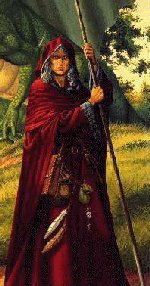

МЕСТНЫЙ ЖИТЕЛЬ
КЕТСАЛКОАТЛЬ

| Раса: |
Arial |
| Пол: |
Мужской
|
| Профессия: |
Warlock |
| Align: |
Lawful-Good |
| Клан: |
Не в клане |
| Религия: |
Enki, God of Knowledge |
Kетсалкоатль - могущественный warlock, ставший на путь белой магии.
Всегда готов помочь тому кто просит помоши.
Всегда готов дать отпор силам зла.